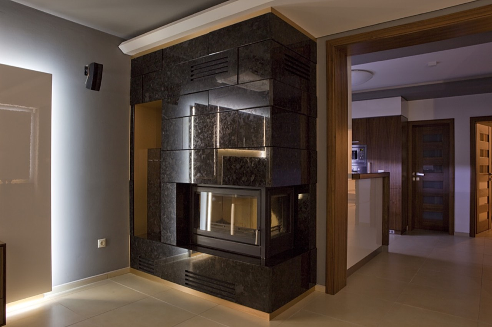
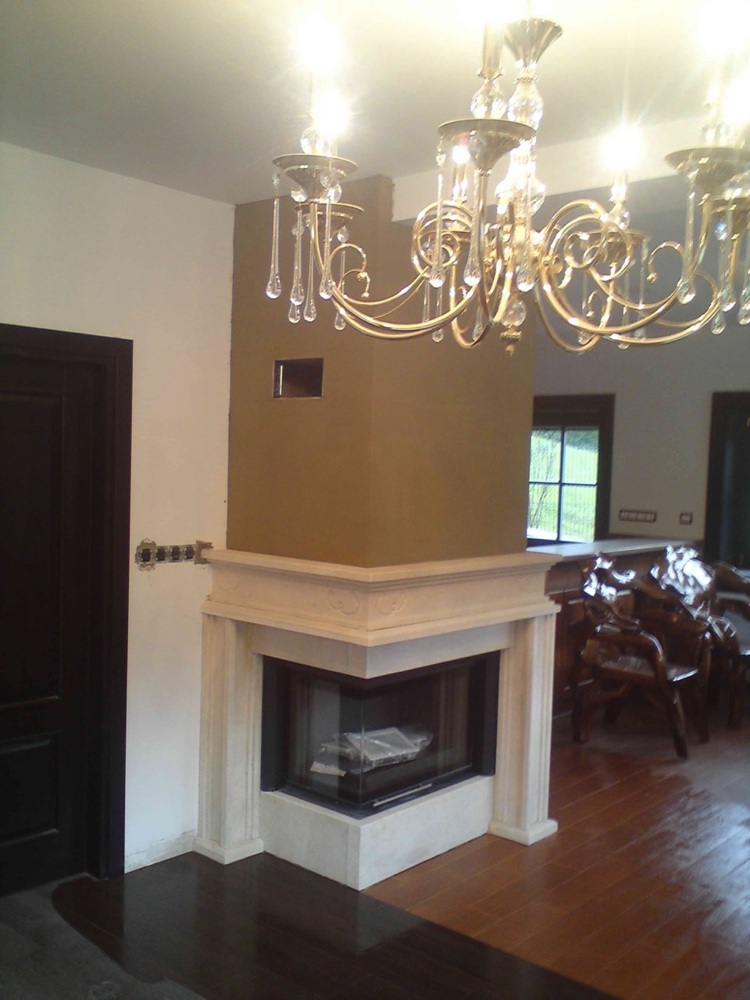
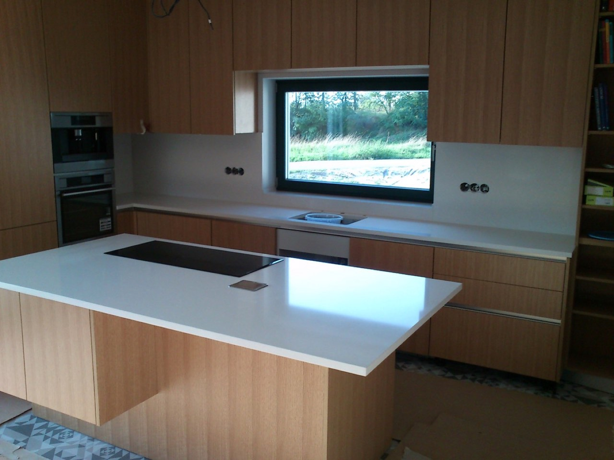
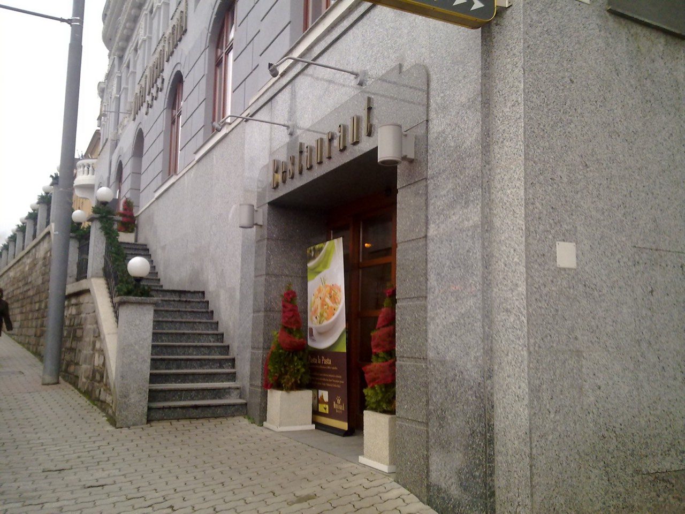
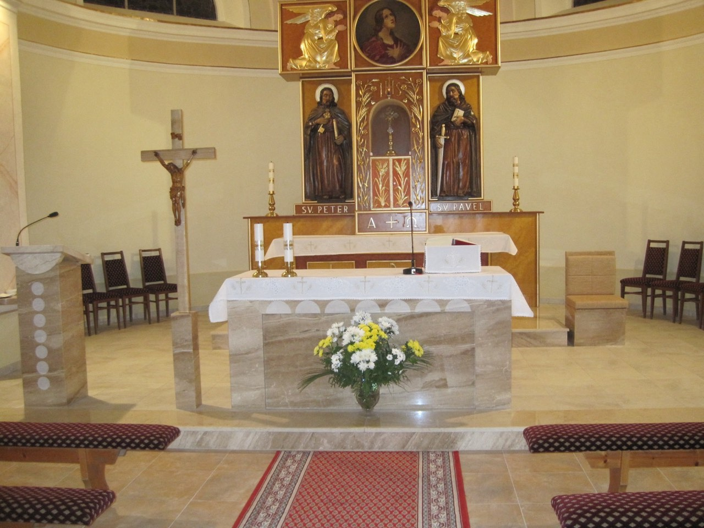
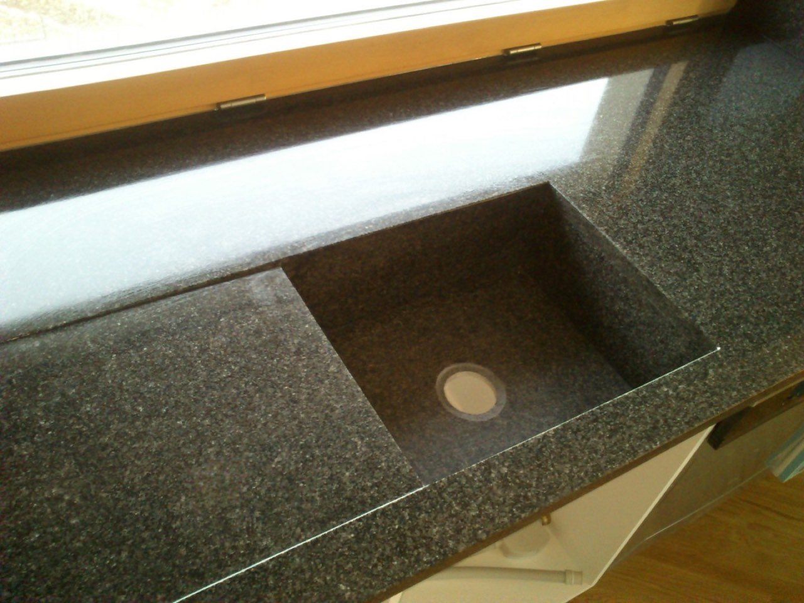

KAMENÁRSTVO & KRBY · ŽILINA
Kameň má
svoj príbeh.
Ten váš.
Prírodný materiál. Ľudský prístup.
Riešenia, ktoré patria k vám.

MY MU DÁVAME TVAR.v.
Máme radi veci,
ktoré pretrvajú.
Kameň je jedinečný. Rovnako ako priestor, pre ktorý ho spracúvame. V kamenárstve VEKAM spájame skúsenosti a tradíciu s modernými technológiami.
Vytvárame interiérové aj exteriérové riešenia podľa vašich špecifických požiadaviek. S dôrazom na kvalitu, odborné služby a profesionálny, osobný prístup.
02 / ČO TVORÍME
Od detailu
k celému priestoru.
Kameň v jeho mnohých podobách.
Vždy s citom pre vaše predstavy.
01Krby & kozuby
TEPLO DOMOVA

Teplovzdušné kozuby, ktoré sa stanú prirodzeným srdcom vášho domova. Realizujeme portálové, rustikálne aj moderné riešenia.
- Krbové obstavby z kameňa
- Portálové obstavby
- Moderné a rustikálne kozuby
02Kameň v interiéri
KAŽDODENNÁ KRÁSA

Prírodný materiál pre miesta, ktorých sa dotýkate každý deň. Rozmery aj spracovanie prispôsobíme vášmu priestoru.
- Kuchynské pracovné dosky
- Kúpeľne a bytová architektúra
- Schody, parapety a podlahy
03Exteriér & architektúra
PRIRODZENÝ CHARAKTER

Kameň, ktorý dotvára charakter stavby. Exteriérové riešenia pripravujeme podľa vašich konkrétnych požiadaviek.
- Obklady fasád
- Kamenné schody a podlahy
- Exteriérové parapety
04Pomníky & sakrálne prvky
ÚCTA V KAMENI

Citlivé spracovanie prírodného kameňa pre spomienku aj duchovný priestor. S rešpektom k miestu a jeho významu.
- Pomníky a pomníkové zostavy
- Sakrálne prvky
- Individuálne kamenárske riešenia
03 / REALIZÁCIE
Za nás hovorí
naša práca.
04 / MATERIÁLY
Nič navyše.
Len príroda.
Žula, mramor, pieskovec a ďalšie prírodné materiály. Každý s vlastnou kresbou, farbou a charakterom. S výberom pre váš priestor vám radi pomôžeme.
Výrazná štruktúra a prirodzená pevnosť. V našej ponuke nájdete žulu pre kuchynské dosky, schody aj ďalšie kamenárske riešenia.

OD PRÍRODYDETAIL Z NAŠEJ GALÉRIE
Aj kameň
dokáže svietiť.
Ónyxové lampy z prírodného kameňa v rôznych veľkostiach. Dekoratívny prvok, ktorý prinesie do interiéru jemné svetlo a jedinečnú kresbu materiálu.
od 120 € vrátane DPH*
Informovať sa o lampách ↗* Cena uvedená na pôvodnej stránke. Aktuálnu cenu a dostupnosť vám potvrdíme osobne.
Ónyx v tradícii +
Pôvodná stránka spája ónyx s vážnosťou, cieľavedomosťou, sebakontrolou, koncentráciou a pokorou a s odoberaním negatívnej energie bez jej absorbovania. Ide o tradičnú symboliku kameňa.
05 / SME VÁM NABLÍZKU
Čo spolu
vytvoríme?
Máte predstavu, výkres alebo len prvú myšlienku?
Začnime rozhovorom.
Chotárna 1434/19
010 01 Žilina – Trnové
06 / ROZVOJ & INOVÁCIE
Tradícia s pohľadom
do budúcnosti.
Investujeme do technológií.
S podporou Európskej únie.